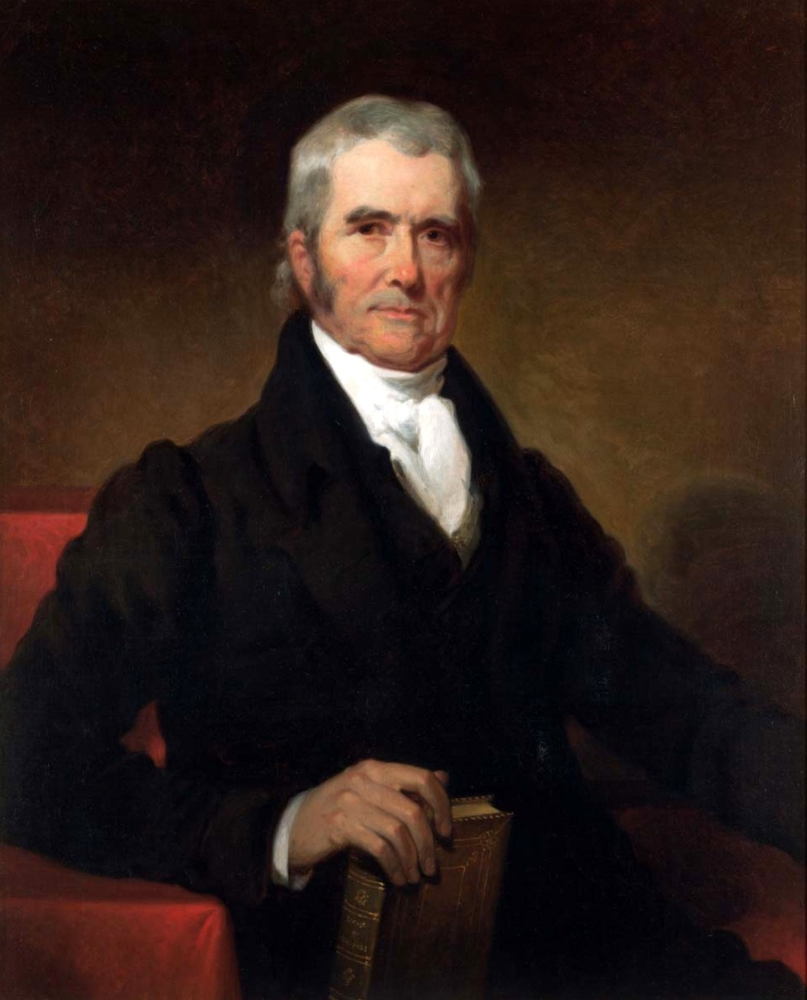

Directions: Read the background and the two records, then answer the questions.

Background. In Worcester v. Georgia (1832), Chief Justice Marshall wrote for the Supreme Court that the Cherokee nation was a distinct community occupying its own territory, in which the laws of Georgia could have no force, and that the Georgia act under which the missionary Samuel Worcester was prosecuted was consequently void. Georgia refused to obey the judgment, and President Jackson declined to enforce it. Three years later, on December 29, 1835, Major Ridge, John Ridge, Elias Boudinot, and others of their party signed the Treaty of New Echota, whose first article ceded to the United States all the lands owned, claimed, or possessed by the Cherokee east of the Mississippi River, for five million dollars. John Ross's memorial protested that the instrument was made by unauthorized individuals and that upwards of fifteen thousand Cherokee had protested against it. The Senate ratified the treaty in May 1836 by a single vote, and in 1838 some sixteen thousand Cherokee were rounded up and marched west.
1. State Marshall's holding in Worcester v. Georgia, in the decision's own terms.
2. State what Georgia and President Jackson each did with the judgment, and how Worcester finally left prison.
3. Name the treaty of December 1835 and define it from the lesson's vocabulary, including its ratification margin.
4. The Cherokee won in the Supreme Court in 1832 and were marched west in 1838. Explain, using the treaty's numbers, how a judgment in their favor was overtaken.
1. State Marshall's holding. The Cherokee nation is a distinct community, occupying its own territory with boundaries accurately described, in which the laws of Georgia can have no force, and which Georgians have no right to enter without the Cherokees' assent or in conformity with treaties and acts of Congress. The whole intercourse between the United States and the nation is vested in the federal government, and the Georgia act under which Worcester was prosecuted is consequently void, and the judgment against him a nullity. (Blueprint 4)
2. State what Georgia and Jackson did, and how Worcester left prison. Georgia defied the judgment and kept Worcester imprisoned at hard labor. President Jackson declined to enforce the Court's ruling against the state. Worcester was freed in January 1833 only when Georgia's governor pardoned him and let the case die, so the judgment was never executed by the government that issued it. (Blueprint 4)
3. Name and define the treaty. The Treaty of New Echota, the treaty of December 1835 signed at New Echota by a minority of Cherokee acting without their government's authority, which the Senate ratified by a single vote and which supplied the legal cover under which the Cherokee were removed in 1838. Its first article ceded all Cherokee land east of the Mississippi for five million dollars. (Blueprint 3 and 4)
4. How was a judgment in their favor overtaken? It was overtaken by a later instrument in treaty form. The judgment of 1832 denied Georgia any force in Cherokee country but carried no enforcement of its own. The Treaty of New Echota of December 29, 1835, signed by the Ridge and Boudinot minority, protested by upwards of fifteen thousand Cherokee in Ross's memorial, and ratified by a single Senate vote in May 1836, supplied the cession the judgment had refused to recognize: all Cherokee land east of the Mississippi for five million dollars, with two years to leave. When the deadline came in May 1838, troops rounded up some sixteen thousand Cherokee and marched them west, roughly a quarter dying on the road. (Blueprint 3 and 4)
Teacher note. This check is formative. Question 2 is the entry diagnostic: students who write that Jackson overturned or vetoed the decision have replaced a refusal to enforce with an act that never happened, and the distinction is the lesson. Question 4 predicts success on the activity verdict, because it requires holding the 1832 victory and the 1836 ratification in one answer.